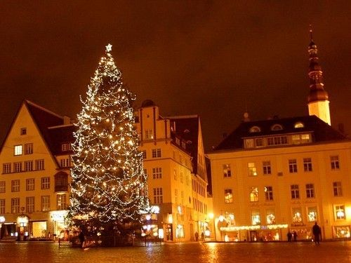
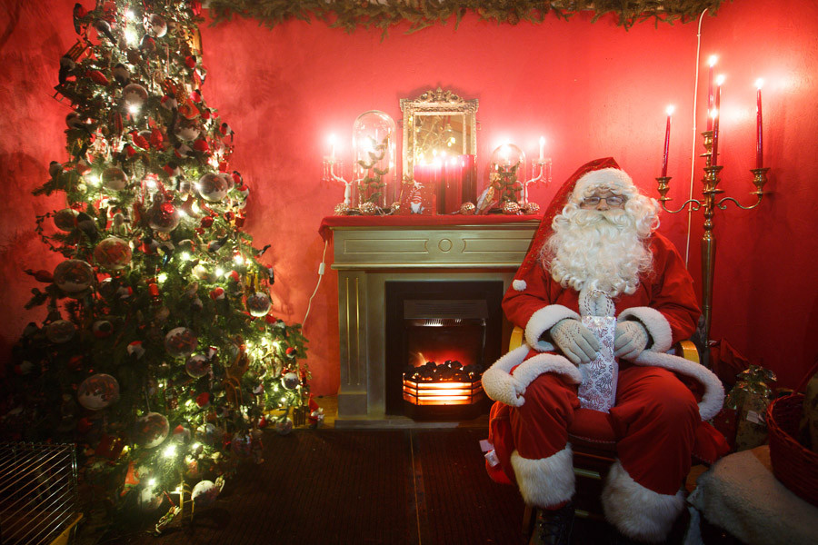
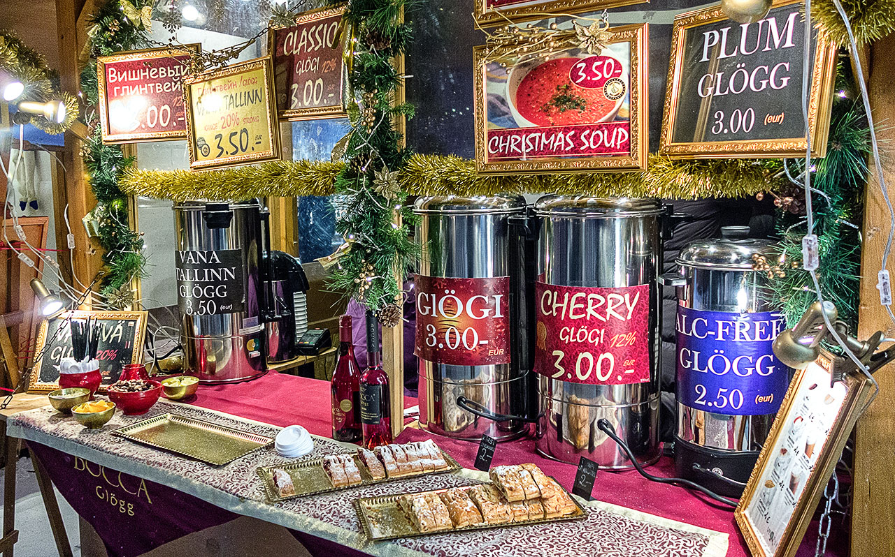
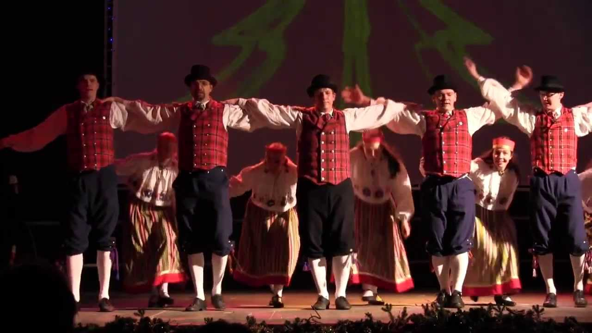
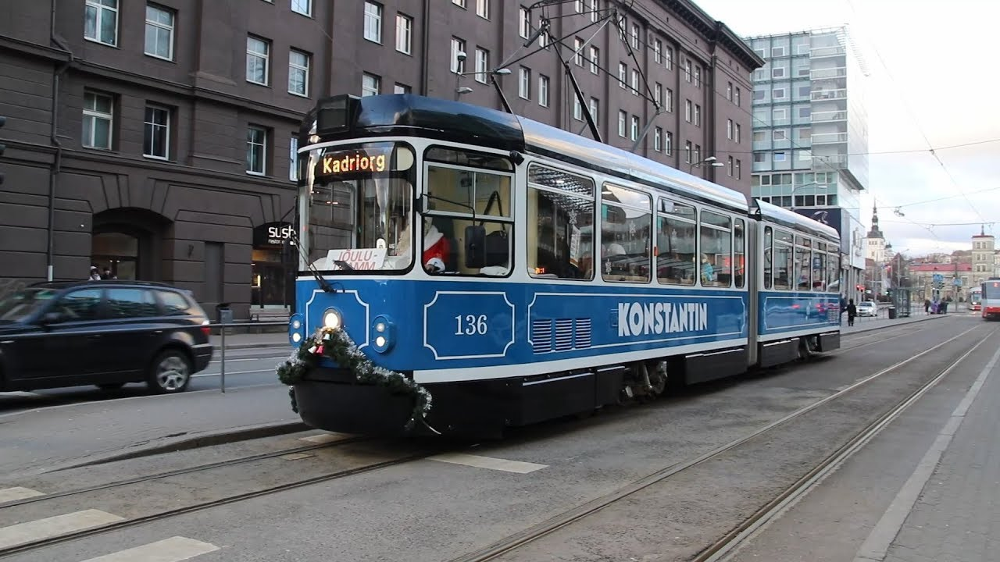

Kuvaus
Perinteen mukaisesti Tallinnan joulumarkkinat avaavat osastonsa tänä vuonna, jotta meillä on ilo nauttia satuun tyypillisestä joulusta. Raekoja Platsissa, Raatihuoneen aukiolla, seisoo iso kuuski, joulun symboli, ja kaupungimme on ylpeä siitä, että se on ensimmäinen paikka maailmassa, jossa joulukuusi rakennettiin: vuonna 1441, ei enää ei vähemmän!

Viime vuosina kokonaismarkkinoista, joissa on kauniit keskiaikaiset rakennukset Raekoja Plats, on tullut joulun ja turistisymboli, ei vain Viron, vaan koko Euroopan, luokiteltu yhdeksi parhaimmista joulumarkkinoista Euroopassa. maanosa ja maailma saavat miltei miljoonan kävijän ympäri maailmaa joka vuosi. Lapsille on taattu hauskaa Kiitos Joulupukista, joka pienessä puutalossaan antaa karkkeja lapsille, jotka paremmin sanovat jakeet (laulavat ja sanoivat jakeet tai runot on maamme perinne, joka jaetaan Latvian ja Liettuan Baltian naapureidemme kanssa). Eri kopeissa voi ostaa korkealaatuisista käsintehtyistä tuotteista talviasusteisiin, kuten käsineisiin tai huiviin. Ja kun olet kyllästynyt tarkkailemaan kioskeja ja huomaa, että vatsasi röövelee raivoisasti, voit sammuttaa ruokahaluasi joillakin piparkakkuilla tai maistaa herkullisia virolaisia paahto ruokia. Voit myös kokeilla glögiä, tyypillistä juomaa Baltiasta, Skandinaviasta ja Venäjältä. Tai kansainvälinen kuuma suklaa, joka tuntuu aina hyvältä. Jouluhenki on läsnä, ja sitä vahvistaa erityinen kulttuuriohjelma. Viikonloppuisin erilaiset musiikkoryhmät Virosta ja ulkomailta soittavat kauppalavalla, ja joka sunnuntai adventin aikana sytytetään kynttilä samaan aikaan kuin Viron ja Venäjän luterilaisten kirkkojen pastorit, ja Kaupungin pormestari pitää tervetulleiksi puheita aukiolla oleville ihmisille, ja vuosi 2019 toivotetaan tervetulleeksi entistä erityisemmällä ohjelmalla!
Tallinnan joulumarkkinat tervetulleita kaikki avosylin. Hyvää joulua
Kalenteri
El mercadillo abre sus puertas desde el 16 de noviembre hasta el 7 de enero todos los días desde las 10:00 hasta las 20:00. Las bebidas calientes (vino caliente) podrán disfrutarse de domingo a jueves hasta las 22:00, y los viernes y sábados hasta las 23:00. Programa especial de Navidad: Viernes de 17:00 a 19:00, Sábados y Domingos de 12:00 a 14:00.Desde el 2 de diciembre Santa Claus da la bienvenida a los niños de lunes a domingo desde las 12:00 hasta las 19:00.


Osallistujaa
Cada fin de semana participarán diferentes grupos folk de nuestro país y del extranjero, dispuestos a brindarnos un animado espectáculo.Los participantes son los siguientes:
Viernes 16 de Noviembre:Viisuveeretajad (Estonia), Carolina (Estados Unidos)
Sábado 17 de Noviembre:Black and White (Irlanda), Mariliis Jögeva (Estonia) Solas (Irlanda), Tantsusarvikud (Estonia)
Domingo 18 de Noviembre:Pühalepa (Estonia), Escuela de danza RAPTI (Grecia)
Viernes 23 de Noviembre:Leesikad (Estonia)
Sábado 24 de Noviembre:Juhukse (Estonia), Zahira (Estonia)
Domingo 25 de Noviembre:Cantitores (Finlandia), Kirmas (Estonia)
Viernes 30 de Noviembre:Nömme (Estonia), Söleke (Estonia), Free Flow Studio (Estonia)

Sábado 1 de Diciembre:Moroshka (Rusia), Tammed ja Toomed (Estonia), Harku Harakad (Estonia)
Domingo 2 de Diciembre:Kopli (Estonia), Coros de las congregaciones luteranas de Tallín.
Viernes 7 de Diciembre:Vöör ja Ahter (Estonia), Escuela de danza RAPTI (Grecia)
Sábado 8 de Diciembre:Kuu (Estonia), Panter (Estonia), KT Stuudio (Estonia)
Domingo 9 de Diciembre:Ellerhein (Estonia), Ingliskad (Estonia)
Viernes 14 de Diciembre:Köku (Estonia), VAT Stuudio (Estonia)
Sábado 15 de Diciembre:Tuisuline (Estonia), Happy Feet (Nueva Zelanda), Jürid-Maarid (Estonia)
Domingo 16 de Diciembre:Siki (Estonia), MYDANCE (Suecia)
Viernes 21 de Diciembre:Desiree (Estonia)
Sábado 22 de Diciembre:Kolgaküla Laneerid (Estonia), Free Flow Studio (Estonia)
Domingo 23 de Diciembre:Löoke (Estonia), Modus (Alemania)
Viernes 28 de Diciembre:LTF (Estados Unidos), Alhambra (Estados Unidos), Asmarah (Estonia), Valeria Nikolajeva (Rusia)
Sábado 29 de Diciembre:Beatrice Nebis (Estonia), Aler (Georgia)
Domingo 30 de Diciembre:Modus (Alemania), Lili Adeni (Estonia)
Lunes 31 de Diciembre:Programa especial de Año Nuevo, Nömme Huvikooli (Estonia)
Viernes 4 de Enero:Terek (Rusia), Jagody (Polonia), Sakala Laululapsed (Estonia)
Sábado 5 de Enero:Pääsuke (Estonia), Kodu (Estonia), Leigarid (Estonia)
Domingo 6 de Enero:Koit (Estonia), Juri Zaljubovski (Rusia), Mustad Kassi (Estonia).Clausura del Mercadillo
Paikka
Raekoja Plats está en el corazón del centro histórico de Tallín. Para aquellos turistas que se hayan alojado fuera del centro o residentes en la periferia, las paradas de autobús urbano y tranvía están sólo a 5 minutos caminando. La línea 4 de tranvía conecta de forma directa Raekoja Plats con el aeropuerto.
 Parada de autobús más próxima: Viru (líneas 21,21B,40,41,48,73)
Parada de autobús más próxima: Viru (líneas 21,21B,40,41,48,73)
 Parada de tranvía más próxima: Viru (líneas 3 y 4)
Parada de tranvía más próxima: Viru (líneas 3 y 4)

Kirjoitus
Para inscribirse en los talleres gratuitos de artesanía navideña, puedes rellenar el siguiente formulario: